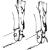
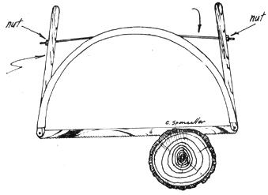

Make Your Own Bow Saw
By the Mother Earth News editors
November/December 1972
Any homesteader who has an old 26" bicycle rim, some scrap wood and the usual odds and ends kicking around his workshop will find he can make himself a brand new bow saw for the price of the blade alone (a 24" Swedish steel blade sells here on Long Island for $1.61).
The outside diameter of a 26" wheel rim is just shy of 24". This means that half of such a rim, plus a couple of handlesized pieces of wood, combined with a cable or rod tensioner, and two nails and two nuts (or two bolts and four nuts) are all you need to add to that $1.61 blade to make a bow saw that will cut as well as those selling for up to $10.00 or more. That's a pretty good bargain since every piece of hardware I've listed is free or potentially free.
When I made my first bicycle rim bow saw, I turned the blade to face out and cut off both wooden handles flush with the saw's face. It worked fine, but I found that holding the bow vertically up over the wood being cut tired my wrist.
I soon fixed that problem by replacing one handle with a longer piece of wood and turning the blade in. Now when I cut stove wood, the bow acts as a pendulum weight that naturally wants to keep the saw blade vertical for me, and I can still reverse the blade to cut out whenever I want to work on a log or limb that's too big or too unhandy to fit inside the saw's frame.
|
 Two details of wood fitting into rim groove with nut & bolt or nail attachment for blade. |
 Cable or rod both pull blade taut and tension of arch of rim. handle-sized piece of wood approximately 16"" long. Robert's first bow saw had handles the same length. |
 Handle is approximately 22"" long extending one handle, Lemp found, made the saw a lot handier to use. |